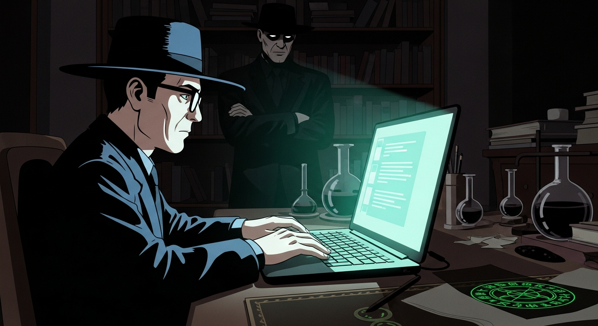
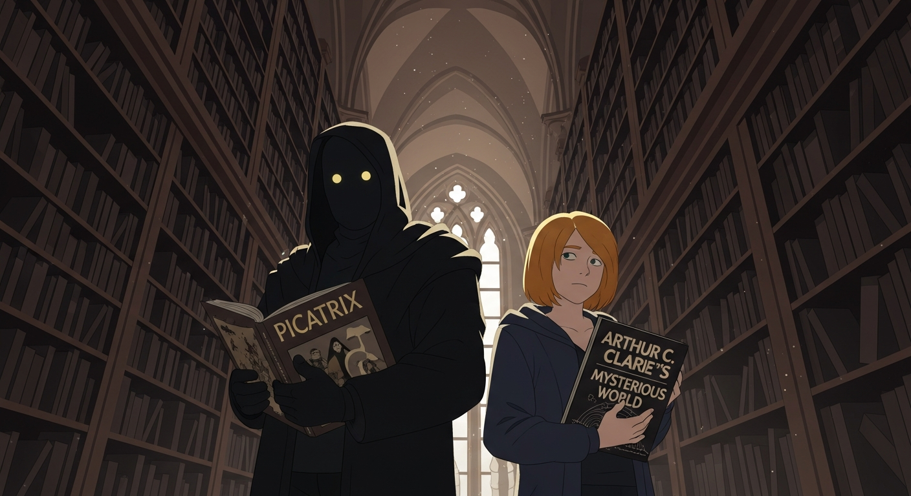

Like many kids, *Arthur C. Clarke's Mysterious World* fueled my imagination. Then I found a footnote, Agrippa, linked to something darker. I found Agrippa's *Picatrix*, dog-eared and filled with notes. And then… this sigil. It pulsed. Corny, I know, but I felt it. A weird tension—like the *Evil Dead* book coming alive. Had I brushed against the *Invisibilia Dei*?

So, I sought out Alexander F—knew the esoterica cold. He scoffed, until he saw the *Picatrix*. He paled. I'd blundered into something. Then *Dee* appeared—spectral and pissed. 'Unchecked ambition,' he warned, 'madness.' The book… it wasn't just knowledge. It was a *node*. Control it, or it controls you. Sanity optional.